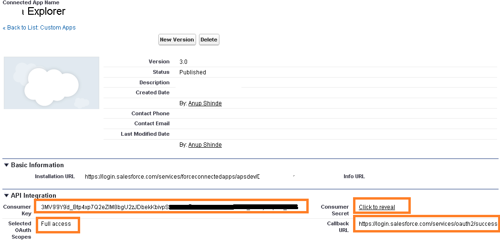
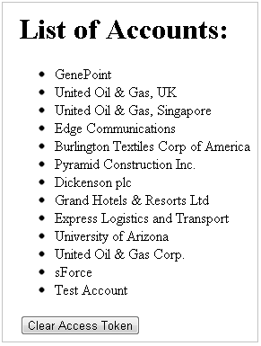

In this post, we will see how to create a Google Chrome Extension that uses Salesforce.com’s REST API. We will be using the OAuth2 authorization and to do this we will use an existing library for OAuth2 chrome extensions created by Boris Smus (see references).
Before we get started, it is assumed that you have some knowledge on creating Chrome extensions. If not, I highly encourage you to go through Getting Started tutorial for developing Chrome extensions . You can use the attached source code to load unpacked extension in developer mode. You also need to change the Consumer Secret/Key before this becomes usable - explained further.
In this example, we will create an application name "Data Explorer" which will basically only fetch the List of Accounts from Salesforce using the REST API.
1. Defining application manifest - "manifest.json": This manifest file defines the application as below:
{
"manifest_version": 2,
"name": "Force.com SOQL Explorer ",
"description": "Execute Force.com SOQL queries right from your browser",
"version": "1.0",
"content_scripts": [
{
"matches":
["https://login.salesforce.com/services/oauth2/success*data_explorer_test*"],
"js": ["/oauth2/oauth2_inject.js"],
"run_at": "document_start"
}
],
"content_security_policy": "script-src 'self' 'unsafe-eval'; object-src 'self'",
"permissions": [
"https://*.salesforce.com/"
],
"app": {
"launch": {
"local_path": "explorer.html"
}
}
}
Notice the content_scripts section where we have the "matches" attribute. Here we define the URL which will be injected with a javascript "oauth2_inject.js". This basically allows the extension-application to close the new tab/window that was created to do authorization. Notice that the match is looked for "data_explorer_test". This value acts as an unique attribute across multiple applications using the same library and allows the extension to inject scripts only in pages with URLs where this text is available. This helps avoid closing not-extension popups that return authorization.
We also have a permissions attribute set to *.salesforce.com. This grants the permisison to the extension to make REST calls to Salesforce URLs.
We also have ""content_security_policy" set to allow the template library Handlebars.js to work correctly. This attribute is not required by rest of the code otherwise.
The applicaiton is launched by in the page "explorer.html"
2. Next the view is defined as shown below - "explorer.html".
<head> <script src="/oauth2/oauth2.js"></script> <script src="jquery.min.js"></script> <script src="explorer.js"></script> <!-- Using template library Handlebars for templating. --> <script src="handlebars.js"></script> </head> <body> <h1>List of Accounts: </h1> <div id="content"> </div>
Above we add the oauth2 library reference and refer the JS file "explorer.js" for this application. jQuery and Handlebars are used as helpers.
The applicaiton will request for Authorization as soon as the view loads. And once authorized, it will query the Account object and show results in #content div.
3. The OAuth2 flow is mentioned below:
1. Applicaion requests for permission and User grants permission for the application to access the OAuth 2.0 endpoint
2. Endpoint redirects to the redirect URL and extension injects a script into that redirect URL (based on "matches" regex)
3. Injected script redirects back to oauth2.html, also passing the redirect URL which finishes OAuth2.0 flow and calls the "ready" method.
4. Application then uses authObject.getAccessToken() to get a valid access token that is passed with RESTful requests.
4. Enable REST API on your org and replacing Consumer Key and Secret in the code.
In your Salesforce Developer account, you will also to create a Connected App (found in newer orgs) or Remote Access App (for older orgs).
Once you create a Connected App, make sure you note the ConsumerKey/ConsumerSecret that will be replaced in the code.
Also the Connected App currently defines scope to Full Access and the same is used in the sample-code. You may want to change this per your requirements. Refer the guide Digging Deeper into OAuth 2.0 on Force.com for more details

6. Create the OAuth2 object
We can now create the OAuth2 instance by passing the Consumer Secret and Consumer Key as config parameters. In "explorer.js":
chrome.app._inject_scope = "data_explorer_test";
///.......///
sfdcAuth = new OAuth2('sfdc', {
client_id: '--YOUR_CONSUMER_KEY--',
client_secret: '--CONSUMER_SECRET--',
api_scope: 'full'
});
We have also defined an "chrome.app._inject_scope" that is the same value that we used in the manifest.json->"content_scripts ->matches" ( A better approach would have been to modify OAuth2 lib to take this as config parameter and use AppID, but I did not want to make changes to that)
In the above code we pass the value "sfdc" for the Salesforce adapter with OAuth2. This adapter is defined in "oauth2/adapters/sfdc.js". This adapter is responsible for creating the config for the OAuth2 instance and handling the responses from SFDC. Errors are handled within this adapter and passed back to the callback method. This adapter also uses the "_inject_scope" that was defined earlier and that variable is passed as "state" parameter in the authorization request.
Once we create the instance, we call its "authorize" method. This method takes a callback input which is passed an error (if any). If no error is detected, it means that the code has been authorized and can make requests. We can get the access token from "getAccessToken" method and that is passed in Authorization header of the requrest. Below, we create the url and fire a select query on Account. The result of the query is populated in #content div.
sfdcAuth.authorize(function(error) {
if(typeof(error)!='undefined') {
alert(error);
}
var _data_service_url
= sfdcAuth.get('instance_url')
+"/services/data/v26.0/query/?q=SELECT Name FROM Account LIMIT 100";
$.ajax({
url: _data_service_url,
cache: false,
type: 'GET',
dataType: 'json',
headers: {'Authorization': 'OAuth ' + sfdcAuth.getAccessToken()},
success: function(data){
console.log(data);
var source = $("#accounts-list-template").html();
t_accounts = Handlebars.compile(source);
var html = t_accounts(data);
$("#content").append(html);
}
});
});
We can also remove the access token by using "sfdcAuth.clearAccessToken();" method. In the example, I have added a button to do so that clears the token and refreshes the window.
The Salesforce URLs that have been used in the "sfdc" adapter are shown below. Make sure the the RedirectURL matches the Callback URL mentioned in Connected App.
/* URLs used in oauth2/adapters/sfdc.js */ AuthorizationCodeURL - https://login.salesforce.com/services/oauth2/authorize RedirectURL - https://login.salesforce.com/services/oauth2/success AccessTokenURL - https://login.salesforce.com/services/oauth2/token
The result of the example operation is shown below:

If any of this was useful to you please rate /share / leave a comment. Happy coding
---- References ----
Patched version of library - OAuth2 - Chrome Extensions originally written by Boris Smus
Implementing OAuth2 from Chrome Extensions by Boris Smus
Guide on Force.com REST API: Digging Deeper into OAuth 2.0 on Force.com